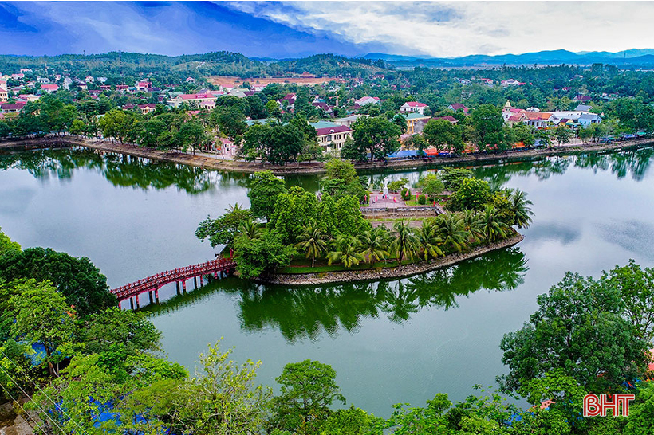
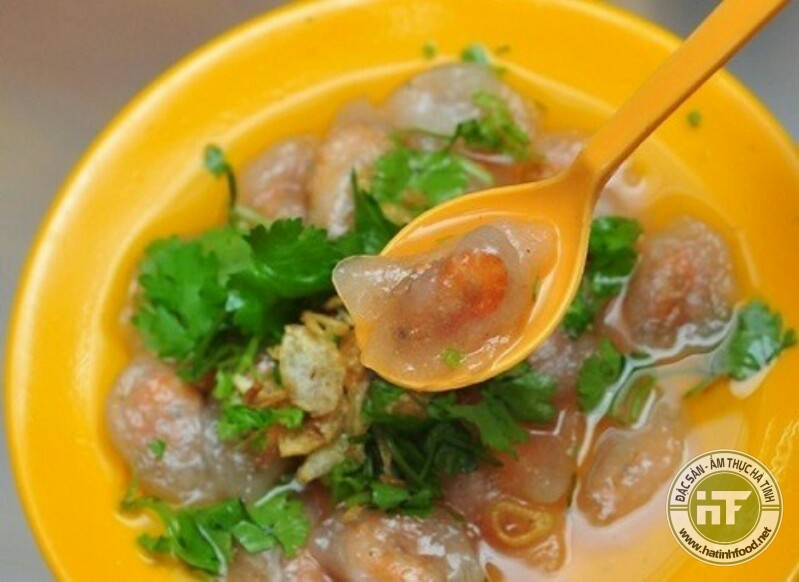
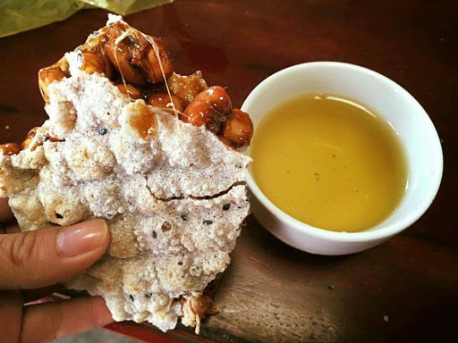

Thanh Nguyen Dinh
You Can Contact To Me Through
My Hometown
Huong Khe District, Ha Tinh Province
Traditional Food: Bánh Bèo
Traditional Food: Kẹo Cu Đơ
We Often Enjoy Kẹo Cu Đơ With A Cup Of Tea. Eating Them This Way Can Enhance The Flavor Of This Traditional Treat
